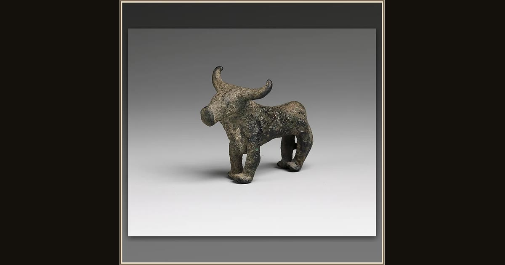

Bronze bull
Unknown · ca. 1400–1200 BCE or later · The Metropolitan Museum of Art · New York, USA
Greek families gave the gods little bronze cattle like this one as thank-you gifts. When Telemachus reaches sandy Pylos, aged Nestor honors Athena with a great sacrifice — a heifer whose horns are wrapped in gold — before the feast on the shore. Explore its pl